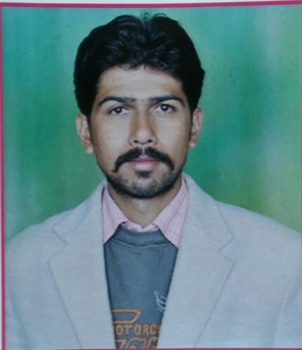
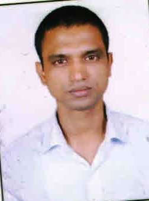
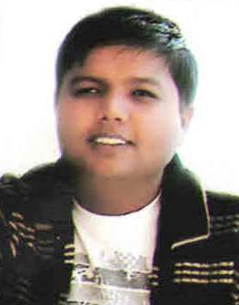

Menu ITG
Menu
Home
People
Faculty
Staff
Facilities
Activities
WorkShop
Expert Lectures
ITG Home
Faculty In Department of Mechanical Engineering
Head of Department
Mr. Sandeep Kandwal
Assistant Professor
M.Tech. (Kumoun Engineering College, Dwarahat), B.Tech. (UTU, Dehradun)
Research Interests :
Heat Mass Transfer Engineering, Engineering Drawing, Basic Mechanical Engineering, Thermal Engineering
Assistant Professor

Mr. Hemant Chauhan
Assistant Professor
M.Tech. (Graphic Era University, Dehradun), B.Tech. (Punjab Technical University)
Research Interests :
CAD-CAM

Mr. Sriyak Yadav
Assistant Professor
M.Tech. (IIT, Roorkee), B.Tech.
Research Interests :
Thermal Engineering

Mr. Dinesh Kumar
Assistant Professor
M.Tech. (UPTU, Lucknow), B.Tech.
Research Interests :
Machine condition Monitoring, Manufacturing Science
Powerd By: Department of Computer Science and Engineering
All Right Reserved: Institute of Technology Gopeshwar